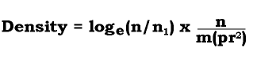

Back to Nakanai '93 Contents Page
Back to Nakanai '93 Contents Page
Many hours of observation and mist-netting led to the compilation of species lists for both sites. In addition, spot counts were conducted as follows.
Sites were chosen haphazardly. We were forced to follow bush trails as cutting through the undergrowth would have been too time- consuming and disruptive. We followed a trail and stopped after every ten minutes to do a count. The count was started two minutes after reaching the location. Every bird that was seen or heard during a five minute period was recorded; we noted (i) the species and (ii) whether the bird was within or beyond 30 meters from the observer.
We chose this method as it is well-known and proven and was suitable for the habitat we were working in. It has been used successfully in a number of other studies (Bibby & Robins '85, DeSante '81 & '86, Koen '88, Pyke & Recher '85, Weins & Rotenberry '85). The method is more fully outlined by Reynolds et al ('80) and by Bibby et al ('92) and is discussed by Fuller & Langslow ('84) and Engstrom & James ('84) .
A total of 20 counts were made at Wild Dog, 19 at Talawe.
The data collected can be used to estimate the density of each species by the following equation (Bibby et al '92):

where
For an accurate estimation of the population density of a given species, a large number of observations are required. Due to the difficulties of detecting the birds in the dense habitat, not enough observations were made of most of the species encountered. Population density estimates were calculated for species of which ten or more individuals were recorded. Ten observations is not enough for a reliable estimate, so individual population density values should not be relied upon. However, it is trends rather than single values, that are important for the comparison of the two sites. The population density estimates for the two sites, approximate as they are, suffer from the same limitations, so comparison between sites is possible. They give a valuable indication of the relative abundance's of the commoner birds at each site.
N.B. It is only possible to calculate the density of a species if individuals are observed both within and beyond the 30 metre radius.